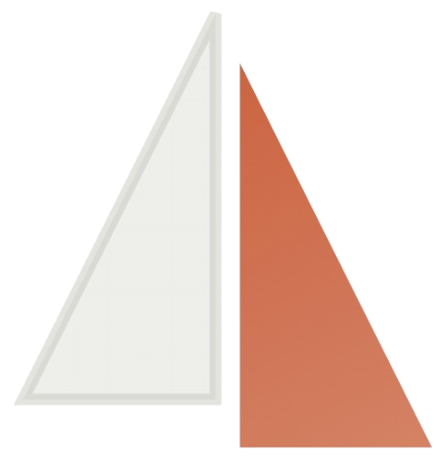

01 | Theory
Knowledge is not the bottleneck.
University and the internet provide information. What learners still lack is a sequence that turns theory into visible capability.
Graduation Project | Mallah ملّاح
One platform for the full tech journey: path selection, structured learning, portfolio proof, resume refinement, job analysis, and application tracking.
Presented By
Abdulaziz F. Alotaibi
Salem S. Hamed
Nader F. Alotaibi
Jamal A. Sweidan
Context
Supervisor: Dr. Mohammed Elfaki
Shaqra University
College of Computing and Information Technology

Problem
02
They need direction, proof, and a clear moment when they know they are ready to apply.
01 | Theory
University and the internet provide information. What learners still lack is a sequence that turns theory into visible capability.
02 | Noise
Tutorials, roadmaps, resume tips, and job boards all live in separate worlds. Beginners waste energy stitching them together.
03 | Readiness
Many apply too early, while others keep learning forever. The missing signal is measurable readiness backed by proof.
Saudi Context
03
Saudi digital transformation creates demand for talent, but many learners still reach graduation without a structured bridge into entry-level technical work.
Local Need
Digital employability is a national priority. The market wants capability, not just course completion.
Graduate Reality
Students still face path confusion, weak portfolios, and unclear readiness even after serious effort.
Product Opportunity
A guided bilingual platform fits both the regional market need and the learner context better than a generic global tool.
Product Definition
04
One workflow links onboarding, roadmap learning, project evidence, resume building, job analysis, and application tracking.
Start
Profile, goals, weekly time, confidence.
→Decision
Assign the most suitable technical direction.
→Learning
Path → stage → topic with milestones.
→Proof
Visible work replaces vague completion claims.
→Packaging
ATS-aware drafting built from real learner data.
→Alignment
Match jobs to skills, gaps, and next steps.
→Execution
Move from saved opportunity to offer with continuity.
Learner Journey
05
The learner moves through a simple progression: understand where to start, follow a path, build proof, then approach the market with evidence.
01
Profile, goals, weekly availability, confidence.
02
Four structured technical tracks matched to intent.
03
Topics, milestones, projects, verified skills, resume assets.
04
Opportunity analysis, action plans, and application follow-through.
Platform Overview
06
These modules are already designed to reinforce each other instead of living as isolated tools.
Dashboard
Roadmap
Portfolio
Resume
Analyzer
Tracker
Deep Dive 1
Mallah organizes each path into stages and topics, tracks progress, and uses project milestones to turn passive study into visible advancement.
Roadmap View
Deep Dive 2
Portfolio Hub and Resume Builder turn completed work into evidence that can be shown, shared, and tailored for opportunities.
Portfolio Hub
Resume Builder
Deep Dive 3
The Opportunity Analyzer and Application Tracker connect jobs to skills, missing topics, action plans, and follow-through.
Opportunity Analyzer
0Sample match score signal
Application Tracker
Architecture
10
The technical architecture favors modularity, secure data handling, and clear boundaries between learner-facing features and platform logic.
Frontend
Application
Data + AI
Methodology
11
The project followed an Agile path from problem framing and analysis through design, implementation, testing, and live deployment.
Scope, users, context.
Research and competitive review.
UML and system structure.
Eight learner-facing features.
Validation across modules.
Live platform and iteration.
What Was Built
Mallah is not a single prototype screen. It is a connected platform with breadth across learner workflow, administration, and bilingual delivery.
Career paths
Learner-facing features
Languages
Admin control layer
Platform Breadth
Learn
Roadmaps
Build
Projects
Package
Resume
Apply
Analyzer + Tracker
Differentiation
13
Most tools solve one fragment. Mallah links decision-making, skill-building, evidence, job analysis, and tracking in a single learner workflow.
Closing
Mallah is not just a learning platform. It is a complete employability system that turns uncertainty into direction, effort into visible proof, and ambition into real career readiness.
Final Position
Appendix
15
Appendix
Thank you for listening. The product is real, the workflow is connected, and the problem it solves is immediate.